ASCII Art Pipeline Gallery
First live proof surface for the standalone repo. This gallery now shows the exact problem we care about:
mathematically dense but unreadable output versus
clear, high-contrast character silhouette.
Generated with the current repo commands:
ascii-pipeline diagnose and ascii-pipeline render-preview.
Clarity comparison board
Side-by-side reference: known-good chafa void-watcher versus failure-mode
v6 factor-16 exact-integer void-watcher.
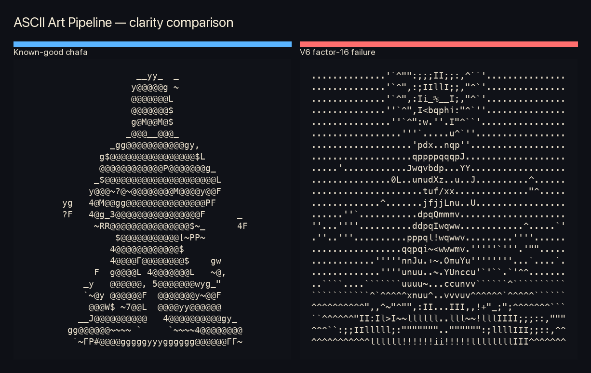
Full-size scene showcase: cosmic pyramid
A square illustration stress-test: hard geometric pyramid silhouette, tiny robed figure, and dense stippled nebula field.
This example demonstrates why full-size output should remain first-class for showcase work.
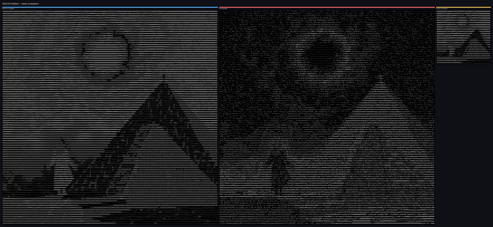
Animated scene eikon: cosmic pyramid
The still image now has a motion pass: subtle zoom drift, apex-star flare, nebula breathing, and sparse star-field twinkle.
The goal is controlled atmospheric change, not noisy flicker.

Supporting motion board: gallery/fullsize/cosmic-pyramid-animated-3frame-board.png
Video-derived animated eikon: owl_ascii
Real motion source: owl_ascii.MP4 (960×960, 12 s, 24 fps). Extracted at 12 fps, converted to
192×96 ASCII with dense-ref, auto state clustering by per-frame delta.
States: idle (33%), thinking (33%), speaking (34%) — balanced motion cycle.
Controls: ▶ Play / ⏸ Pause / ⏭ Step. Motion derived directly from video frame differencing.
Published still-image preset surface
First-class render-image comparison board using the public preset contract.
This path is ascii-image-converter only — no chafa dependency in the published still-image CLI.
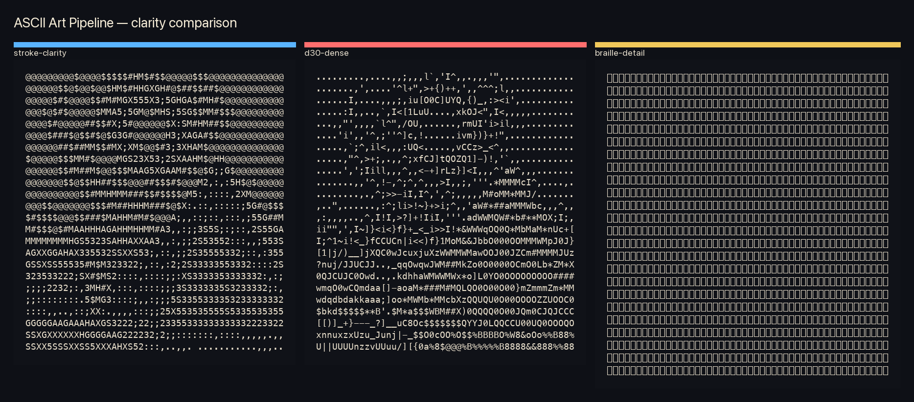
Portrait showcase — D34 alchemist-robe.observatory
Square portrait (1:1) composition rendered across multiple presets. Source from hooded‑ouroboros‑collection.
stroke-clarity delivers crisp silhouette; d30-dense adds cyber‑noir texture density.
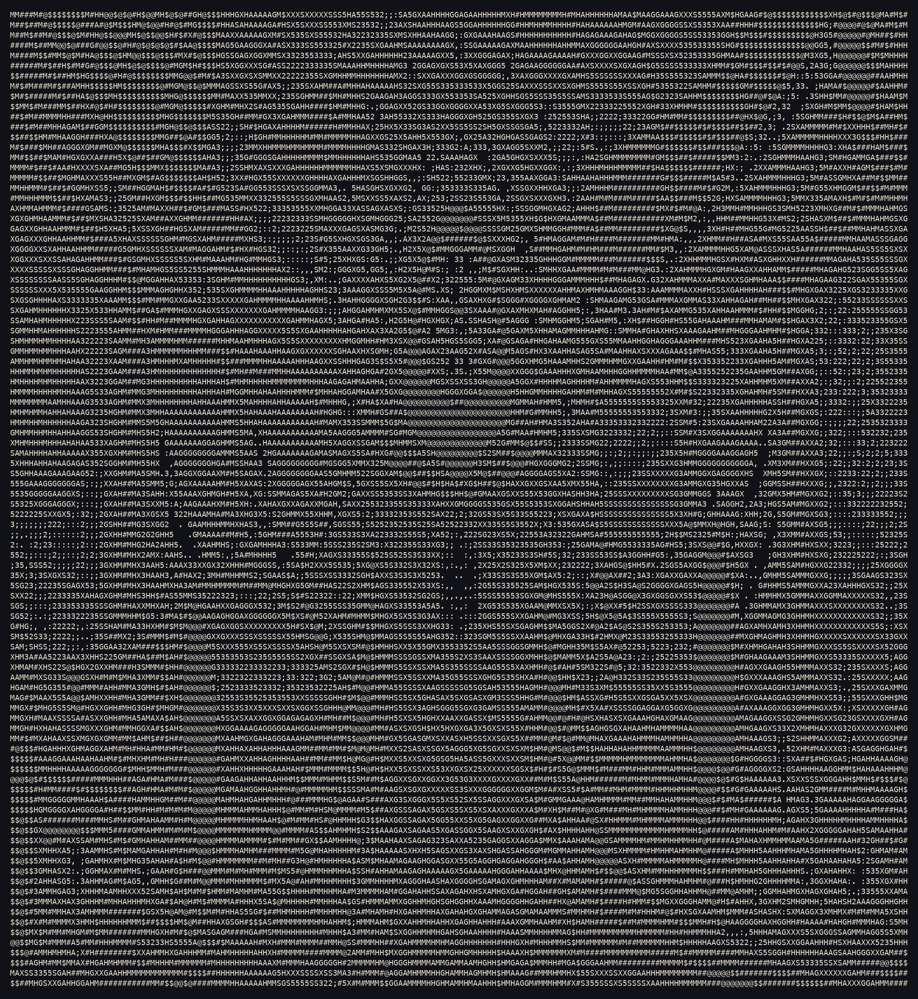
stroke-clarity 192×96

d30-dense 192×96
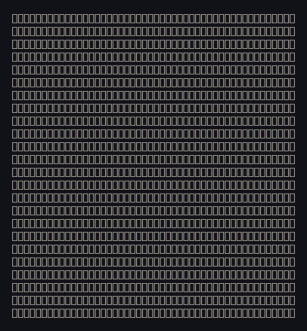
braille-detail 48×24
Dense-field showcase — D30 ASCII complex
Wide, texture‑rich composition (asymmetric) testing the upper bounds of glyph density. Source: D30-ascii-complex-preview.png.
Demonstrates how d30-dense preserves local detail in high‑entropy fields.
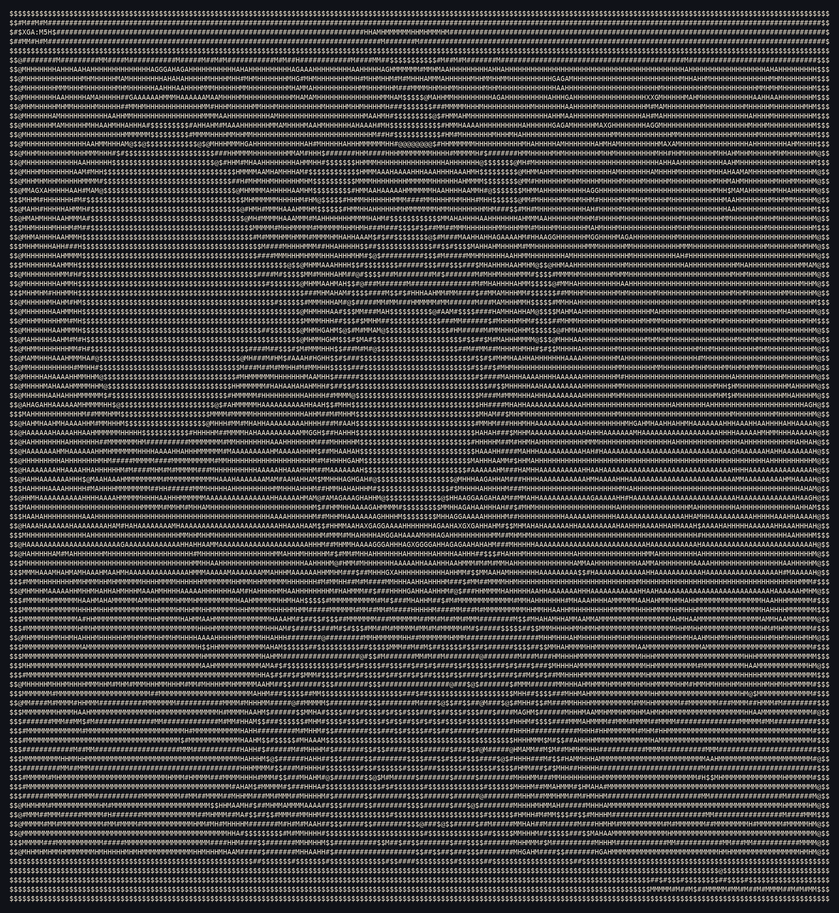
stroke-clarity 192×96
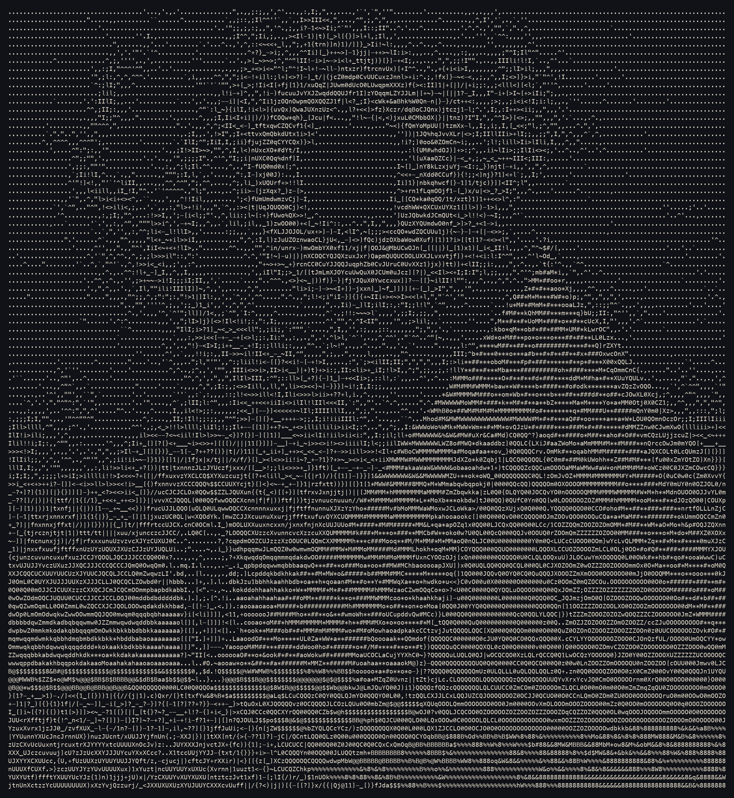
d30-dense 192×96

braille-detail 48×24
Known-good reference
Source: video_derived_chafa/void-watcher.eikon
Verdict: high-contrast
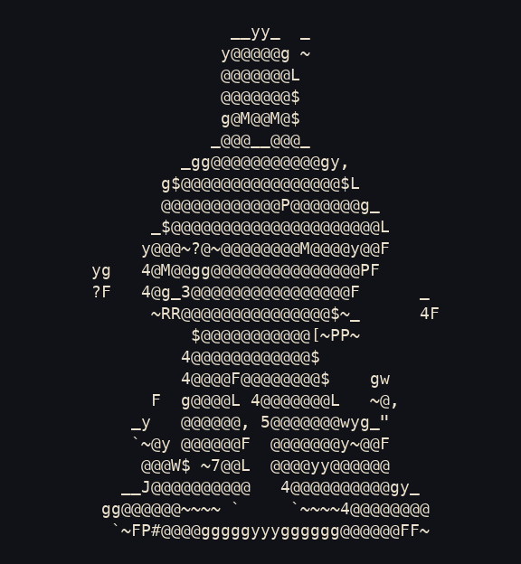
Failure mode
Source: video_derived_ascii_skill_v6_factor16/void-watcher.eikon
Verdict: low-contrast-garble-risk
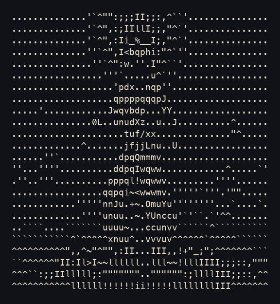
Production museah baseline
Source: video-derived/museah.eikon
Verdict: high-contrast
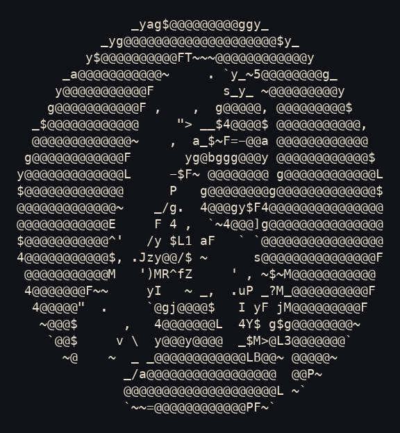
Cosmic pyramid — dense full-size winner
Source: examples/scene-cosmic-pyramid/dense-ref-192x96
Verdict: high-contrast
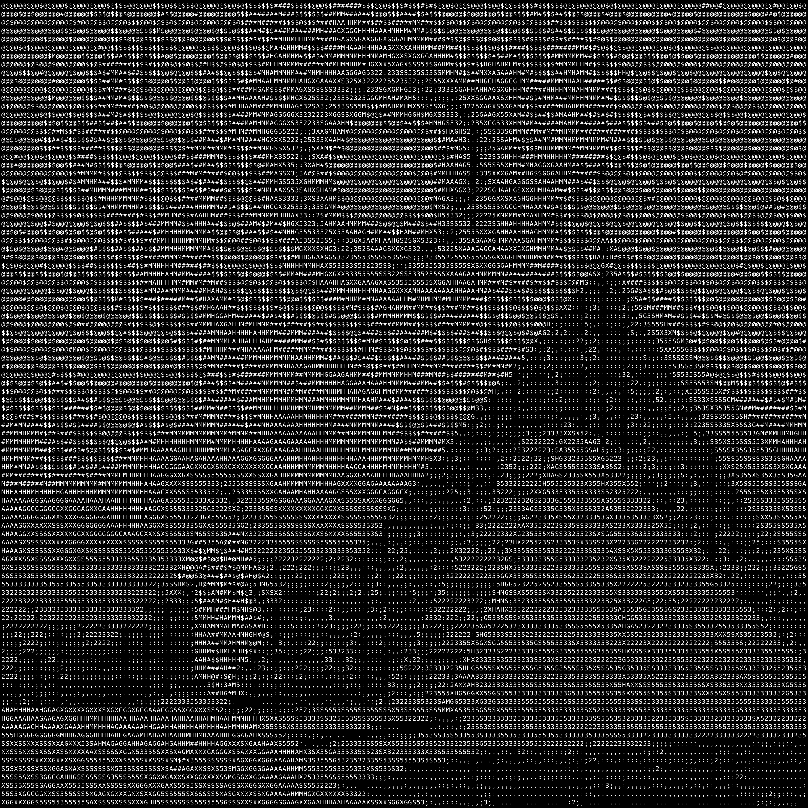
Cosmic pyramid — atmospheric D30 variant
Source: examples/scene-cosmic-pyramid/d30-192x96
Visually strong despite portrait-style heuristic warning
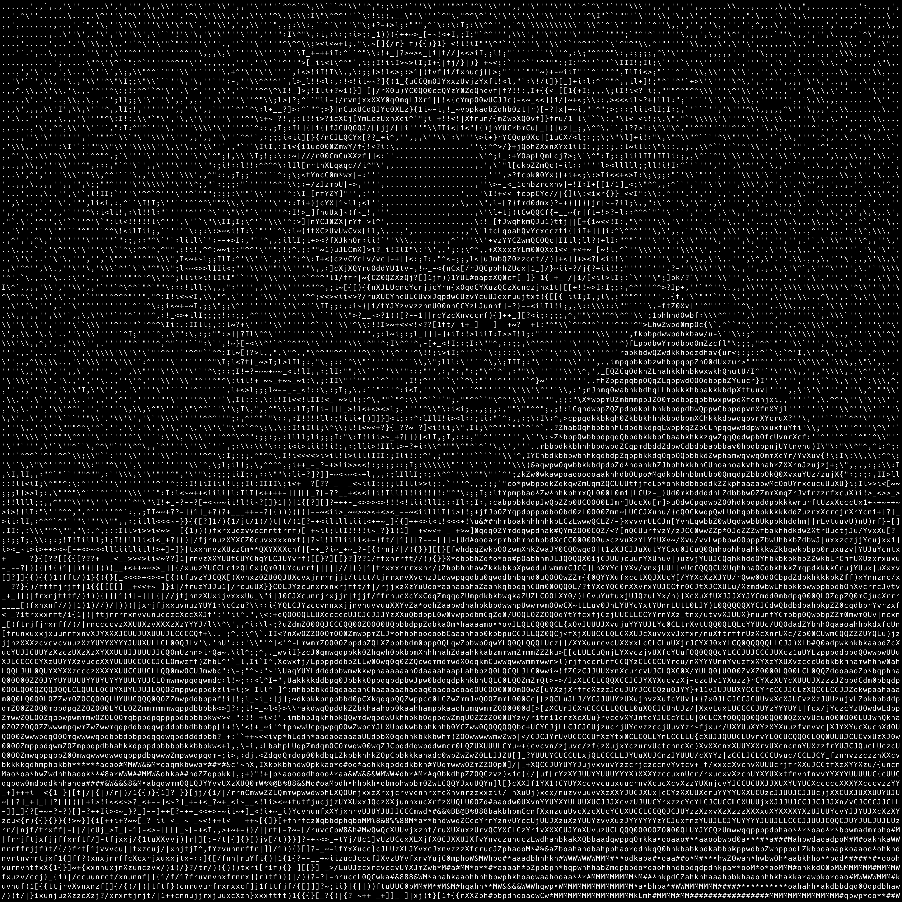
Cosmic pyramid — collapsed fallback
Source: examples/scene-cosmic-pyramid/dense-ref-48x24
Useful derivative, but not the canonical scene master
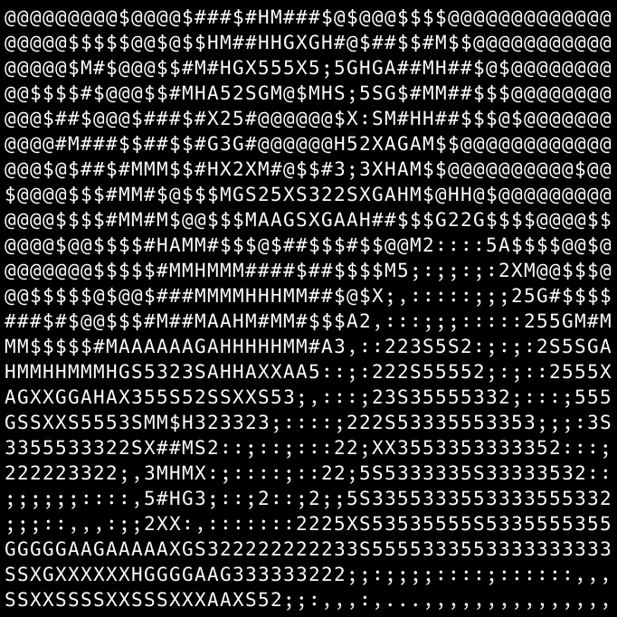